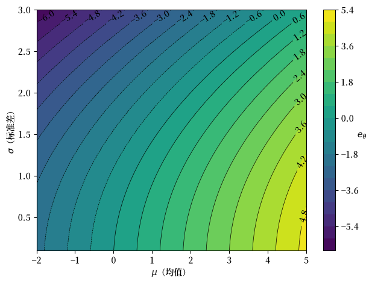
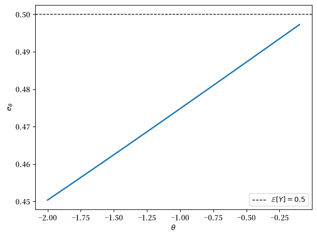
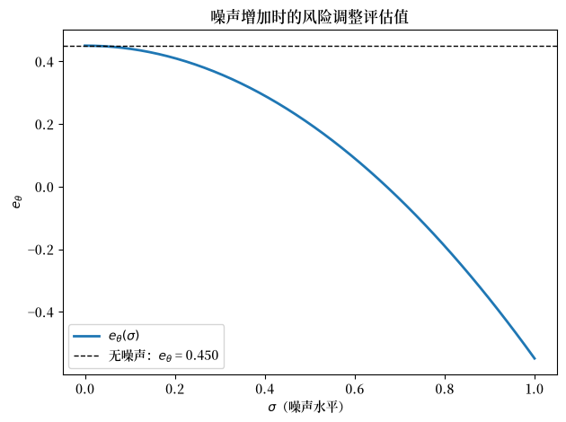
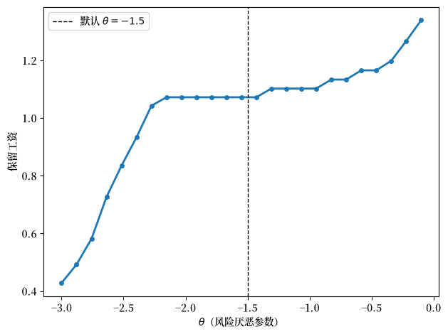
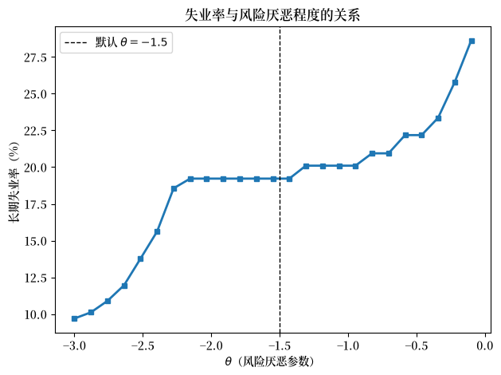

57. 工作搜寻 V：风险敏感型偏好#
GPU
本讲座是在配有GPU的机器上构建的——不过没有GPU也可以运行。
Google Colab 提供带GPU的免费套餐，使用方法如下：
点击右上角的”播放”图标
选择 Colab
将运行时环境设置为包含GPU
57.1. 概述#
风险敏感型偏好是各类动态规划问题中常见的一种扩展设定。
本讲座通过工作搜寻问题介绍风险敏感型递归偏好。
下面给出了一些动机说明。
57.2. 大纲#
在现实世界与工作相关的决策中，个人和家庭都会关心风险。
例如，有些人可能宁愿接受手头一份中等的录用邀约，也不愿冒险等待下一期可能出现的更高录用邀约，即使不对未来收益进行贴现也是如此。
（即所谓“双鸟在林不如一鸟在手”。）
在本系列前面的工作搜寻讲座中，我们通过添加一个凹形流量效用函数 \(u\) 引入了一定程度的风险厌恶。
不幸的是，这种做法并不能将我们所描述的这种风险偏好单独分离出来。
这是因为添加凹形效用函数还会以其他方式改变主体的偏好，比如改变其对消费平滑的偏好程度。
因此，如果我们想研究纯粹的风险效应，就需要一种不同的解决办法。
一种可能的方案是引入风险敏感型偏好。
下面我们将展示如何做到这一点，并研究其对主体选择的影响。
我们将使用 JAX 和 QuantEcon 库：
!pip install quantecon
我们使用以下代码导入库。
import jax
import jax.numpy as jnp
from jax import lax
import quantecon as qe
from typing import NamedTuple
import numpy as np
import matplotlib.pyplot as plt
import matplotlib as mpl # i18n
FONTPATH = "fonts/SourceHanSerifSC-SemiBold.otf" # i18n
mpl.font_manager.fontManager.addfont(FONTPATH) # i18n
mpl.rcParams['font.family'] = ['Source Han Serif SC'] # i18n
57.3. 风险敏感性简介#
让我们从一个静态环境开始讨论。
如果 \(Y\) 是一个随机收益，而主体对该收益的评价为 \(e := \mathbb{E} Y\)， 那么我们称该主体是风险中性的。
有时我们希望将主体建模为风险厌恶型。
一种做法是将他们对收益 \(Y\) 的评价改为
其中 \(\theta\) 是满足 \(\theta < 0\) 的一个数。
值 \(e_{\theta}\) 有时被称为 \(Y\) 的熵风险调整期望。
57.3.1. 一个高斯分布的例子#
理解该影响的一种方式是假设 \(Y\) 服从正态分布 \(N(\mu, \sigma^2)\)，即其均值为 \(\mu\)，方差为 \(\sigma^2\)。
对于这样的 \(Y\)，我们的目标是计算风险调整期望。
如果我们意识到 \(\mathbb{E}[\exp(\theta Y)]\) 正是正态分布的矩生成函数（MGF），这个计算就会变得直截了当。
利用正态分布的矩生成函数的著名表达式，我们得到
因此，
化简可得
我们立即可以看出，主体偏好更高的平均收益 \(\mu\)。
同时，由于 \(\theta < 0\)，风险调整期望随着 \(\sigma\) 的增加而下降。
具体而言，\(e_\theta\) 随着风险的增加而减少。
下面通过等高线图可视化 \(e_\theta\) 作为 \(\mu\) 和 \(\sigma\) 的函数，其中 \(\theta=-1\)。
θ = -1
μ_vals = np.linspace(-2, 5, 200)
σ_vals = np.linspace(0.1, 3, 200)
μ_grid, σ_grid = np.meshgrid(μ_vals, σ_vals)
e_θ = μ_grid + (θ * σ_grid**2) / 2
# 创建等高线图
fig, ax = plt.subplots()
contour = ax.contour(
μ_grid, σ_grid, e_θ, levels=20, colors='black', linewidths=0.5
)
contourf = ax.contourf(
μ_grid, σ_grid, e_θ, levels=20, cmap='viridis'
)
ax.clabel(contour, inline=True)
cbar = plt.colorbar(contourf, ax=ax)
cbar.set_label(r'$e_\theta$', rotation=0)
ax.set_xlabel(r'$\mu$（均值）')
ax.set_ylabel(r'$\sigma$（标准差）')
plt.tight_layout()
plt.show()
findfont: Failed to find font weight normal, now using 600.
findfont: Failed to find font weight normal, now using 600.

图 57.1 熵风险调整期望，高斯情形#
同样，我们看到主体偏好更高的平均收益，但厌恶风险。
57.3.2. 一个更一般的情形#
前面的分析依赖于高斯（正态）假设以获得解析解。
我们可以通过模拟来研究所有其他情形。
例如，假设 \(Y\) 服从贝塔分布 Beta\((a, b)\)。
这里我们设定 \(a=b=2.0\)，并使用蒙特卡洛方法计算 \(e_{\theta}\)。
该方法为：
从 Beta\((2,2)\) 中抽取样本 \(Y_1, \ldots, Y_n\)
用对 \(\exp(\theta Y_i)\) 的平均值替代 \(\mathbb{E}\)
我们对 \(\theta\) 在 \(-2\) 到 \(-0.1\) 之间的 100 个网格点上执行此操作。
下面是 \(e_{\theta}\) 相对于 \(\theta\) 的图像。
# 设定参数
a, b = 2.0, 2.0
mc_size = 1_000_000 # 大量蒙特卡洛样本
θ_grid = jnp.linspace(-2, -0.1, 100)
# 使用 JAX 从 Beta(2, 2) 分布中抽取样本
key = jax.random.key(1234)
Y_samples = jax.random.beta(key, a, b, shape=(mc_size,))
# 定义计算单个 θ 值对应的 e_θ 的函数
def compute_e_θ(θ):
"""计算 e_θ = (1/θ) * ln(E[exp(θ * Y)])"""
expectation = jnp.mean(jnp.exp(θ * Y_samples))
return (1 / θ) * jnp.log(expectation)
# 使用 vmap 对 θ_grid 进行向量化
compute_e_θ_vec = jax.vmap(compute_e_θ)
e_θ_values = compute_e_θ_vec(θ_grid)
# 绘制结果
fig, ax = plt.subplots()
ax.plot(θ_grid, e_θ_values, lw=2)
ax.set_xlabel(r'$\theta$')
ax.set_ylabel(r'$e_\theta$')
ax.axhline(y=0.5, color='black', linestyle='--',
linewidth=1, label=r'$\mathbb{E}[Y] = 0.5$')
ax.legend()
plt.tight_layout()
plt.show()

图 57.2 风险调整评估值与风险厌恶程度的关系#
该图展示了风险调整评估值 \(e_\theta\) 如何随风险厌恶参数 \(\theta\) 变化。
当 \(\theta \to 0\) 时，\(e_\theta\) 的值趋近于 \(Y\) 的期望值， 即对于 Beta(2,2) 而言 \(\mathbb{E}[Y] = \frac{a}{a+b} = \frac{2}{4} = 0.5\)。
这是合理的，因为当 \(\theta \to 0\) 时，主体变为风险中性。
随着 \(\theta\) 变得更负，\(e_\theta\) 会下降。
这反映出一个更加风险厌恶的主体，对不确定收益 \(Y\) 的估值低于其期望值。
57.3.3. 均值保持展开#
下一个练习要求你研究均值保持展开（mean-preserving spread）对风险调整期望的影响。
练习 57.1
保持 \(Y \sim \text{Beta}(2, 2)\) 不变，并固定 \(\theta = -2\)。
再次使用蒙特卡洛方法计算
其中 \(X = Y + \sigma Z\)，\(Z\) 是标准正态随机变量。
\(e_\theta\) 如何随 \(\sigma\) 变化？
你能否给出一些直觉解释这一现象（考虑到主体是风险厌恶的）？
请用图示说明你的结果。
解答 练习 57.1
以下是我们的解答。
a, b = 2.0, 2.0
θ = -2.0
mc_size = 1_000_000 # 大量蒙特卡洛样本
σ_grid = jnp.linspace(0.0, 1.0, 50)
# 设定随机种子以保证可复现性
key = jax.random.key(1234)
key_y, key_z = jax.random.split(key)
# 从 Beta(2, 2) 分布中抽取样本
Y_samples = jax.random.beta(key_y, a, b, shape=(mc_size,))
# 抽取标准正态样本（对所有 σ 值复用）
Z_samples = jax.random.normal(key_z, shape=(mc_size,))
# 定义计算单个 σ 值对应的 e_θ 的函数
def compute_e_θ(σ):
"""计算 X = Y + σ * Z 时的 e_θ"""
# 计算 X = Y + σ * Z
X_samples = Y_samples + σ * Z_samples
# 使用蒙特卡洛方法计算 E[exp(θ * X)]
expectation = jnp.mean(jnp.exp(θ * X_samples))
# 计算 e_θ
return (1 / θ) * jnp.log(expectation)
# 使用 vmap 对 σ_grid 进行向量化
compute_e_θ_vec = jax.vmap(compute_e_θ)
e_θ_values = compute_e_θ_vec(σ_grid)
# 绘制结果
fig, ax = plt.subplots()
ax.plot(σ_grid, e_θ_values, lw=2, label=r'$e_\theta(\sigma)$')
ax.set_xlabel(r'$\sigma$（噪声水平）')
ax.set_ylabel(r'$e_\theta$')
ax.set_title(r'噪声增加时的风险调整评估值')
ax.axhline(y=e_θ_values[0], color='black', linestyle='--', linewidth=1,
label=f'无噪声：$e_\\theta$ = {e_θ_values[0]:.3f}')
ax.legend()
plt.tight_layout()
plt.show()
findfont: Failed to find font weight normal, now using 600.

该图清楚地显示，\(e_\theta\) 随着 \(\sigma\) 的增加而单调下降。
由于该主体是风险厌恶的（\(\theta = -2 < 0\)），她厌恶不确定性。
随着我们增大 \(\sigma\)，波动性会增加，因为
与此同时，期望值保持不变，因为
因此平均收益并不随 \(\sigma\) 变化。
换句话说，这位风险厌恶的主体并没有因承担额外风险而获得补偿。
这就是为什么该随机收益的估值会下降。
57.4. 回到工作搜寻问题#
在讲座 工作搜寻 IV: 拟合值函数迭代 中，我们研究了一个带有分离、马尔可夫工资抽取和拟合价值函数迭代的工作搜寻模型。
工资邀约过程是连续的，并满足
且 \(\{Z_t\}\) 独立同分布，服从标准正态分布。
现在让我们研究同一个模型，但将风险中性期望的假设替换为风险厌恶期望。
具体而言，那篇讲座中的条件期望
被替换为
除此之外，模型的其余部分保持不变。
我们现在求解这一动态规划问题，并研究 \(\theta\) 对保留工资的影响。
57.4.1. 设置#
下面是用于存储参数及默认参数值的类。
class Model(NamedTuple):
c: float # 失业补偿
α: float # 工作分离率
β: float # 贴现因子
ρ: float # 工资持续性
ν: float # 工资波动率
θ: float # 风险厌恶参数
w_grid: jnp.ndarray # 用于拟合价值函数迭代的网格点
z_draws: jnp.ndarray # 来自标准正态分布的抽样
def create_mccall_model(
c: float = 1.0,
α: float = 0.1,
β: float = 0.96,
ρ: float = 0.9,
ν: float = 0.2,
θ: float = -1.5,
grid_size: int = 100,
mc_size: int = 1000,
seed: int = 1234
):
"""用于创建 McCall 模型实例的工厂函数。"""
key = jax.random.key(seed)
z_draws = jax.random.normal(key, (mc_size,))
# 离散化只是为了获得适合插值的工资网格
mc = qe.markov.tauchen(grid_size, ρ, ν)
w_grid = jnp.exp(jnp.array(mc.state_values))
return Model(c, α, β, ρ, ν, θ, w_grid, z_draws)
57.4.2. 贝尔曼方程#
我们的构造是对 工作搜寻 IV: 拟合值函数迭代 中贝尔曼方程的直接扩展。
首先，我们利用已就业工人的贝尔曼方程，用 \((P_\theta v_u)(w)\) 表示 \(v_e(w)\)：
将其代入失业主体的贝尔曼方程，得到：
我们使用价值函数迭代来求解 \(v_u\)。
然后计算最优策略：若 \(v_e(w) ≥ u(c) + β(P_\theta v_u)(w)\)，则接受该工资。
下面是用于更新 \(v_u\) 的贝尔曼算子。
def T(model, v):
# 拆解模型参数
c, α, β, ρ, ν, θ, w_grid, z_draws = model
# 对以数组表示的价值函数进行插值
vf = lambda x: jnp.interp(x, w_grid, v)
def compute_expectation(w):
# 使用蒙特卡洛方法计算积分 (P_θ v)(w)
inner = jnp.mean(jnp.exp(θ * vf(w**ρ * jnp.exp(ν * z_draws))))
return (1 / θ) * jnp.log(inner)
compute_exp_all = jax.vmap(compute_expectation)
P_θ_v = compute_exp_all(w_grid)
d = 1 / (1 - β * (1 - α))
accept = d * (w_grid + α * β * P_θ_v)
reject = c + β * P_θ_v
return jnp.maximum(accept, reject)
下面是求解器：
@jax.jit
def vfi(
model: Model,
tolerance: float = 1e-6, # 误差容限
max_iter: int = 100_000, # 最大迭代次数上限
):
v_init = jnp.zeros(model.w_grid.shape)
def cond(loop_state):
v, error, i = loop_state
return (error > tolerance) & (i <= max_iter)
def update(loop_state):
v, error, i = loop_state
v_new = T(model, v)
error = jnp.max(jnp.abs(v_new - v))
new_loop_state = v_new, error, i + 1
return new_loop_state
initial_state = (v_init, tolerance + 1, 1)
final_loop_state = lax.while_loop(cond, update, initial_state)
v_final, error, i = final_loop_state
return v_final
下一个函数在假设 \(v\) 为价值函数的前提下计算最优策略：
def get_greedy(v: jnp.ndarray, model: Model) -> jnp.ndarray:
"""获取 v-贪婪策略。"""
c, α, β, ρ, ν, θ, w_grid, z_draws = model
# 对以数组表示的价值函数进行插值
vf = lambda x: jnp.interp(x, w_grid, v)
def compute_expectation(w):
# 使用蒙特卡洛方法计算积分 (P_θ v)(w)
inner = jnp.mean(jnp.exp(θ * vf(w**ρ * jnp.exp(ν * z_draws))))
return (1 / θ) * jnp.log(inner)
compute_exp_all = jax.vmap(compute_expectation)
P_θ_v = compute_exp_all(w_grid)
d = 1 / (1 - β * (1 - α))
accept = d * (w_grid + α * β * P_θ_v)
reject = c + β * P_θ_v
σ = accept >= reject
return σ
下面是一个函数，它接收一个 Model 实例
并返回对应的保留工资。
@jax.jit
def get_reservation_wage(σ: jnp.ndarray, model: Model) -> float:
"""
根据给定的策略计算保留工资。
参数：
- σ：策略数组，σ[i] = True 表示接受工资 w_grid[i]
- model：包含工资数值的模型实例
返回：
- 保留工资（策略指示接受的最低工资）
"""
c, α, β, ρ, ν, θ, w_grid, z_draws = model
# 找到策略指示接受的第一个索引
# σ 是一个布尔数组，argmax 返回第一个 True 值的位置
first_accept_idx = jnp.argmax(σ)
# 如果没有接受（全部为 False），返回无穷大
# 否则返回第一个接受索引处的工资
return jnp.where(jnp.any(σ), w_grid[first_accept_idx], jnp.inf)
让我们在默认参数下求解该模型：
# 首先，让我们求解默认的 θ = -1.5
model = create_mccall_model()
c, α, β, ρ, ν, θ, w_grid, z_draws = model
print(f"求解 θ = {θ} 时的模型")
v_star = vfi(model)
σ_star = get_greedy(v_star, model)
w_bar = get_reservation_wage(σ_star, model)
print(f"默认参数下的保留工资：{w_bar:.4f}")
求解 θ = -1.5 时的模型
默认参数下的保留工资：1.0720
57.4.3. 保留工资如何随 \(\theta\) 变化？#
现在让我们考察保留工资随着风险厌恶参数变化时的走势。
# 创建 θ 值的网格（全部为负值，代表风险厌恶）
θ_grid = jnp.linspace(-3.0, -0.1, 25)
# 定义计算单个 θ 值对应保留工资的函数
def compute_res_wage_for_theta(θ):
"""计算给定 θ 值下的保留工资"""
model = create_mccall_model(θ=θ)
v = vfi(model)
σ = get_greedy(v, model)
w_bar = get_reservation_wage(σ, model)
return w_bar
# 使用 vmap 对 θ_grid 进行向量化
compute_res_wages_vec = jax.vmap(compute_res_wage_for_theta)
reservation_wages = compute_res_wages_vec(θ_grid)
# 绘制结果
fig, ax = plt.subplots()
ax.plot(θ_grid, reservation_wages,
lw=2, marker='o', markersize=4)
ax.set_xlabel(r'$\theta$（风险厌恶参数）')
ax.set_ylabel('保留工资')
ax.axvline(x=-1.5, color='black', ls='--',
linewidth=1, label=r'默认 $\theta = -1.5$')
ax.legend()
plt.tight_layout()
plt.show()

图 57.3 保留工资与风险厌恶程度的关系#
随着 \(\theta\) 变得不那么负（趋向于零），保留工资会增加。
等价地说，随着主体变得更加风险厌恶（\(\theta\) 更负），保留工资会下降。
原因在于，一个更加风险厌恶的主体会更加看重就业带来的确定性收入， 相对而言更不重视继续搜寻所带来的不确定的未来前景。
因此，他们愿意接受更低的工资以摆脱失业状态。
练习 57.2
利用模拟来研究长期失业率如何随 \(\theta\) 变化。
使用上一节中的参数，也就是我们研究保留工资如何随 \(\theta\) 变化时所用的参数。
你可以使用 工作搜寻 IV: 拟合值函数迭代 中的模拟代码，并进行适当修改。
解答 练习 57.2
为了计算长期失业率，我们首先编写一个用于更新单个主体状态的函数。
@jax.jit
def simulate_single_agent(key, model, w_star, num_periods=200):
"""
对单个主体模拟 num_periods 期。
返回最终就业状态（1 表示就业，0 表示失业）。
"""
c, α, β, ρ, ν, θ, w_grid, z_draws = model
# 从任意初始条件开始
w = 1.0
status = 1
def update(t, loop_state):
w, status, key = loop_state
key, k1, k2 = jax.random.split(key, 3)
# 更新工资
z = jax.random.normal(k2)
w_new = w**ρ * jnp.exp(ν * z)
# 就业状态转移
sep_draw = jax.random.uniform(k1)
becomes_unemployed = sep_draw < α
# 检查失业工人是否接受工资
accepts_job = w >= w_star
# 更新就业状态
new_status = jnp.where(
status,
1 - becomes_unemployed, # 就业路径
accepts_job # 失业路径
)
new_wage = jnp.where(
status,
jnp.where(becomes_unemployed, w_new, w), # 就业路径
jnp.where(accepts_job, w, w_new) # 失业路径
)
return (new_wage, new_status, key)
init_state = (w, status, key)
final_state = lax.fori_loop(0, num_periods, update, init_state)
_, final_status, _ = final_state
return final_status
def compute_unemployment_rate(model, w_star, num_agents=1000, num_periods=200, seed=12345):
"""
通过横截面模拟计算失业率。
这里不是对单个主体模拟很长的时间序列，而是并行模拟
大量主体，各自模拟较短的时间段。在 JAX 并行化下，这样效率更高。
稳态满足：
- 就业工人以速率 α 失去工作
- 失业工人以速率 (1 - F(w*)) 找到可以接受的工作
我们对 num_agents 个主体各模拟 num_periods 期，然后计算
最终失业者所占的比例。
"""
# 为每个主体创建各自的随机数密钥
key = jax.random.key(seed)
keys = jax.random.split(key, num_agents)
# 在主体维度上向量化模拟（并行化！）
simulate_agents = jax.vmap(
lambda k: simulate_single_agent(k, model, w_star, num_periods)
)
# 并行运行所有主体的模拟
status_cross_section = simulate_agents(keys)
# 由于 status=1 表示就业，失业率等于 1 - mean(status)
unemployment_rate = 1 - jnp.mean(status_cross_section)
return unemployment_rate
# 定义计算单个 θ 值对应失业率的函数
def compute_u_rate_for_theta(θ):
"""计算给定 θ 值下的失业率"""
model = create_mccall_model(θ=θ)
v = vfi(model)
σ = get_greedy(v, model)
w_star = get_reservation_wage(σ, model)
u_rate = compute_unemployment_rate(
model, w_star, num_agents=5000, num_periods=200
)
return u_rate
# 使用 vmap 对 θ_grid 进行向量化
compute_u_rates_vec = jax.vmap(compute_u_rate_for_theta)
unemployment_rates = compute_u_rates_vec(θ_grid)
# 绘制结果
fig, ax = plt.subplots()
ax.plot(θ_grid, unemployment_rates * 100,
lw=2, marker='s', markersize=4)
ax.set_xlabel(r'$\theta$（风险厌恶参数）')
ax.set_ylabel('长期失业率（%）')
ax.set_title('失业率与风险厌恶程度的关系')
ax.axvline(x=-1.5, color='black', ls='--', linewidth=1, label=r'默认 $\theta = -1.5$')
ax.legend()
plt.tight_layout()
plt.show()

我们看到，随着主体变得更加风险厌恶（\(\theta\) 更负），失业率会下降。
这是因为风险厌恶程度更高的工人保留工资更低， 因此他们会接受范围更广的工作邀约。
结果就是，他们花在寻找更好机会上的失业时间更短。